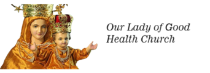
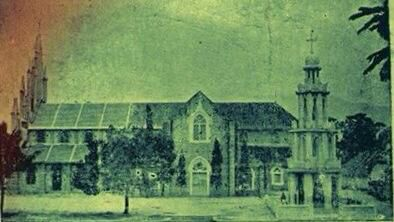

<!DOCTYPE php>
 <php lang="en">
	 <head>
		 <meta charset="utf-8" />
		 <meta name="viewport" content="width=device-width, initial-scale=1.0" />
		 <meta name="description" content="Interior-Design-Responsive-Website-Templates-Edge" />
		 <meta name="author" content="webThemez.com" />
		 <title>STCK : About Us </title>
		 <link rel="favicon" href="assets/images/favicon.png" />
		 <link rel="stylesheet" media="screen" href="../fonts.googleapis.com/css_c5f925f2.css" />
		 <link rel="stylesheet" href="assets/css/bootstrap.min.css" />
		 <link rel="stylesheet" href="assets/css/font-awesome.min.css" />
		
		 <!-- Custom styles for our template -->
		 <link rel="stylesheet" href="assets/css/bootstrap-theme.css" media="screen" />
		 <link rel="stylesheet" href="assets/css/style.css" />
		 <!-- HTML5 shim and Respond.js IE8 support of HTML5 elements and media queries -->
		 <!--[if lt IE 9]>
		<script src="assets/js/php5shiv.js"></script>
		<script src="assets/js/respond.min.js"></script>
		<![endif]-->
	 </head>

	 <body>
		 <!-- Fixed navbar -->
		 <div class="navbar navbar-inverse">
			 <div class="container">
				 <div class="navbar-header">
					 <!-- Button for smallest screens -->
					 <button type="button" class="navbar-toggle" data-toggle="collapse" data-target=".navbar-collapse"><span class="icon-bar"></span><span class="icon-bar"></span><span class="icon-bar"></span></button>
					 <a class="navbar-brand" href="index.php.html"></a>
				 </div>
				
				 <!-- Menu section -->
				 <!DOCTYPE php>
	 <script src="../ajax.googleapis.com/ajax/libs/jquery/1.10.2/jquery.min.js"></script>
	 <script>
		var $j = jQuery.noConflict();
		$j(document).ready(function(){
			var pageName = location.href.split("/").slice(-1);
			if (pageName == "" || pageName == "index.php.html")
			{
				$('#homePage').addClass('active');
			}
			else if (pageName == "ancient-history.php.html" || pageName =="our-church.php.html" || pageName =="about-therese.php.html" || pageName =="sttherese-churches-in-india.php.html" || pageName =="rosary-hill.php.html")
			{
				$('#about').addClass('active');
			}
			else if (pageName == "parish-priests.php.html" || pageName == "sons-of-soil-priests.php.html" || pageName == "sons-of-soil-nuns.php.html")
			{
				$('#priestsAndNuns').addClass('active');
			}
			else if (pageName == "associations.php.html")
			{
				$('#piousAssociation').addClass('active');
			}
			else if (pageName == "documentary-video.php.html" || pageName =="church-altar-photos.php.html" || pageName =="festival-videos.php.html" || pageName =="festival-photos.php.html" || pageName =="car-photos.php.html" || pageName =="flagstaff-photos.php.html" || pageName =="church-photos.php.html" || pageName =="steeple-photos.php.html" || pageName =="other-photos.php.html" || pageName =="rosaryhill-photos.php.html" || pageName =="topview-photos.php.html")
			{
				$('#galleryPage').addClass('active');
			}
			else if (pageName == "parish-council.php.html")
			{
				$('#parishCouncil').addClass('active');
			}
			else if (pageName == "contact.php.html")
			{
				$('#contactPage').addClass('active');
			}
		});
	</script>
	 <div class="navbar-collapse collapse">			
		 <ul class="nav navbar-nav pull-right mainNav">
			 <li id="homePage"><a href="index.php.html">Home </a></li>
			 <li id="about" class="dropdown"><a href="#" class="dropdown-toggle" data-toggle="dropdown">About <b class="caret"></b></a>
				 <ul class="dropdown-menu">
					 <li><a href="ancient-history.php.html">About Us </a></li>
					 <li><a href="our-church.php.html">Our Church </a></li>
					 <li><a href="about-therese.php.html">St.Therese </a></li>
					 <li><a href="sttherese-churches-in-india.php.html">St.Therese Churches in India </a></li>
					 <li><a href="rosary-hill.php.html">Rosary Hill </a></li>
				 </ul>
			 </li>
			 <li id="priestsAndNuns" class="dropdown">
				 <a href="#" class="dropdown-toggle" data-toggle="dropdown">Priests & Nuns  <b class="caret"></b></a>
				 <ul class="dropdown-menu">
					 <li><a href="parish-priests.php.html">Parish Priests </a></li>
					 <li><a href="sons-of-soil-priests.php.html">Sons of Soil - _______ </a></li>
					 <li><a href="sons-of-soil-nuns.php.html">Sons Of Soil - ____ </a></li>
				 </ul>
			 </li>
			 <li id="piousAssociation"><a href="associations.php.html">Associations </a></li>
			 <li id="galleryPage" class="dropdown"><a href="#" class="dropdown-toggle" data-toggle="dropdown">Gallery <b class="caret"></b></a>
				 <ul class="dropdown-menu">
					 <li><a href="documentary-video.php.html">Documentary Videos </a></li>
					 <li><a href="church-altar-photos.php.html">Church Altars </a></li>
					 <li><a href="festival-videos.php.html">Festival Videos </a></li>
					 <li><a href="festival-photos.php.html">Festival Photos </a></li>
					 <li><a href="car-photos.php.html">Church Cars </a></li>
					 <li><a href="flagstaff-photos.php.html">Church Flagstaff </a></li>
					 <li><a href="church-photos.php.html">Church Photos </a></li>
					 <li><a href="steeple-photos.php.html">Church Steeple </a></li>
					 <li><a href="other-photos.php.html">Other Photos </a></li>
					 <li><a href="rosaryhill-photos.php.html">Rosary Hill </a></li>
					 <li><a href="topview-photos.php.html">Top Views </a></li>
				 </ul>
			 </li>
			 <li id="parishCouncil"><a href="parish-council.php.html">Parish Council </a></li>
			 <li id="contactPage"><a href="contact.php.html">Contact </a></li>
			 <li><a href="tamil/index.php.html" title="இணையதளத்தை தமிழில் படிக்க...">தமிழ் </a></li>
			 <li id="liveLink"><a href="https://www.youtube.com/c/StThereseChurchKandanvilai/live" title="Click here to watch the live" target="blank" class="blinking">Live </a></li>
		 </ul>
	 </div>	
 </div></div></body></php>			 </div> 
		 </div> 
		 <!-- /.navbar -->

		 <header id="head" class="secondary">
			 <div class="container">
				 <div class="row">
					 <div class="col-sm-8">
						 <h1>About Us </h1>
					 </div>
				 </div>
			 </div>
		 </header>

		 <!-- container -->
		 <section class="container">
			 <div class="row">
				 <!-- main content -->
				 <section class="col-sm-12 maincontent">
					 <h3>The Church History </h3>
					 <!-- <a href="http://kandanvilaichurch.blogspot.com/p/st.html" target="_blank"></a> -->
					 <p>
						The region was a part of the Sivakasi share.
						<br>
						The place where this temple is located was established in 1988 by Arudpani S. Peter's baby was purchased while they were co-parents.
						<br>
						In 1998, the then parish priest Reverend A. With the efforts of Anthony Pakhyam and the cooperation of the people of the region, with the financial assistance of the Archbishop of Madurai, Marianus Arogyasamy Andagai, a temple was built with a shed and consecrated on September 08, 1999, the birth of the Mother.
						<br>
						As this temple was built with the financial assistance provided by Venerable Archbishop Marianus Arogyaswamy, the area was named 'Marianus Nagar' after Annar.
						<br>
						Also, in 2002, the then parish priest Rev. The foundation stone was laid by Anthony Pappusamy, Deputy Bishop of Madurai High School District with the help of Anthony Bhakyam.
						<br>
						service The church was completed under the patronage of Benedict Ambrose and consecrated by Archbishop Peter Fernando in 2005. After that, during the tenure of Reverend David Dharmaraj, in 2015, Mata Gebi and Arogya Anai's Cross were built in this temple.
						<br>
						The unique feature of this temple is that it is situated in a peaceful natural environment full of green trees. As Mother of Pure Health has been providing grace and protection to all people irrespective of caste and religion, people from different parts of the world have come to pray to her and receive the blessings of God through her.
						<br>
						As the number of people coming to this temple kept increasing due to many innovations taking place through the Mother, the people of the area were very enthusiastic and dreamed that it would be better if this Tiruthalam was set up as a separate temple.
						<br>
						In order to fulfill this dream, on 13-07-2018, it was separated from the Sivakasi share and raised to a separate share by His Excellency Anthony Pappusamy Andagai, Archbishop of Madurai.
					 </p>
				 </section>
				 <!-- /main -->

				 <!-- Sidebar -->
				 <aside class="col-sm-4 sidebar sidebar-right">
				  </aside>
				 <!-- /Sidebar -->

			 </div>
		 </section>
		
		 <!-- Modal Popup starts here... -->
		 <div class="container">
			 <!-- Modal -->
			 <div class="modal fade" id="myModal" role="dialog">
				 <div class="modal-dialog">
		
					 <!-- Modal content-->
					 <div class="modal-content">
						 <div class="modal-header">
							 <button type="button" class="close" data-dismiss="modal">&times; </button>
							 <h4 class="modal-title">Bishop`s service note about ___________ Church </h4>
						 </div>
						 <div class="modal-body">
							 <p>This is a service ____ of Bishop,  <b>Most.Rev. Aloysius Maria Benzigar </b> (Diocese of Quilon) _____ stated that Kandanvilai Church __ the first Church which __ dedicated to St. Therese _____ her Beatification on, 1923. ______  <a href="bishopletter.pdf" title="Service note of, Bishop. Aloysius Maria Benzigar" class="btn-inline" target="blank">click here </a> to read the ________. </p>
							 <object data="bishopletter.pdf" type="application/pdf"></object>
						 </div>
						 <div class="modal-footer">
							 <button type="button" class="btn btn-default" data-dismiss="modal">Close </button>
						 </div>
					 </div>
				 </div>
			 </div>
		 </div>
		 <!-- Modal Popup ends here... -->
		
		 <footer id="footer">
	 <div class="container">
		 <div class="social text-center">
			 <a href="http://www.fb.me/thereseofkandanvilai" alt="" target="blank"><i class="fa fa-facebook"></i></a>
			 <a href="https://www.youtube.com/c/StThereseChurchKandanvilai" alt="" target="blank"><i class="fa fa-youtube"></i></a>
		 </div>		
		 <div class="clear"></div>
	 </div>
	 <div class="footer2">
		 <div class="container">
			 <div class="row">
				 <div class="col-md-6 panel">
					 <div class="panel-body">
						 <p class="simplenav">
							 <a href="index.php.html">Home </a> | 
							 <a href="sttherese-churches-in-india.php.html">Churches </a> |
							 <a href="rosary-hill.php.html">Rosary Hill </a> |
							 <a href="mass-schedules.php.html">Mass Timings </a> |
							 <a href="associations.php.html">Associations </a> |
							 <a href="contact.php.html">Contact </a>
						 </p>
					 </div>
				 </div>
				 <div class="col-md-6 panel">
					 <div class="panel-body">
						 <p class="text-right">Copyright &copy; 2024. All rights reserved. <a href="#" rel="develop">Our Lady of Good Health Church </a></p>
					 </div>
				 </div>
			 </div>
		 </div>
	 </div>
 </footer>
		 <!-- JavaScript libs are placed at the end of the document so the pages load faster -->
		 <script src="../ajax.googleapis.com/ajax/libs/jquery/1.10.2/jquery.min.js"></script>
		 <script src="../netdna.bootstrapcdn.com/bootstrap/3.0.0/js/bootstrap.min.js"></script>
		 <script src="assets/js/custom.js"></script>
	 
 
 